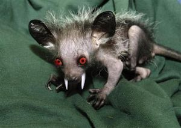

Aye-aye
 De: La Frikipedia, la enciclopedia extremadamente seria.
De: La Frikipedia, la enciclopedia extremadamente seria.
| De la serie animales y otros bichejos:
|
|
|
| Nombre común:
|
Aye-aye o Eeepa!(En Bilbao)
|
| Nombre científico:
|
Cara di gilipollis
|
| Especie:
|
Aye-aye
|
| Subespecie:
|
Comemierdas
|
| Alimentación:
|
Fluidos procedentes del humano, con excepciones.
|
| Apariencia:
|
¡Mira la foto!
|
| Hábitat natural:
|
Alacantarillados de todo el mundo
|
| Localización:
|
En tu esfínter
|
| Número aproximado de ejemplares:
|
3 por metro cuadrado
|
| Fecha de extinción:
|
Morirán cuando cesen los excrementos humanos
|
| Pokemonización:
|
Nivel Maximo
|
El aye-aye es la pokemonización del excremento humano, es decir, cada vez que humanos o seres similares hacemos nuestras rutinarias necesidades, en el sistema de alcantarillado el excremento se pokemoniza en aye-aye. Gracias a nuestras amigas ratas-macho que confunden las cacas con ratas hembra, penetrando a la caca, la rata sin saberlo mezcla su semen con esta produciendo la pokemonización. Una vez realizada, el aye-aye absorbe la sangre a su propio padre rata, como el niño la leche materna al nacer.

Macho rata follandose a una Caca
Actividad de un aye-aye
Día
Después de tres días de digestión, el aye-aye comienza a alimentarse normalmente de lo que encuentra a su alrededor, es decir todo lo que la civilizacion humana tira por el watter, por lo tanto se dedica a ingerir:
- Cacas
- Restos de semen
- Papel higiénico
- Tampax (con sangre femenina)
- Vomitos de Wc, de discotecas o bares
- Condones usados
- Crias de cocodrilo
- Pelos
- Uñas
- Sangre con mierda,(en tuberias de casas de gays, este es uno de sus platos faboritos, ya que contiene sangre masculina)
- Cigarros
- orina
- ...etc
Tan variada alimentación hacen del aye-aye un ser tan hermoso como podemos ver en las fotos, pero con algunas pegas, debido a su alimentación es adicto a...
- Tabaco (de los cigarros)
- Alcohol (de los vomitos)
- semen (de pajilleros)
- ...etc
Tiene todas las enfermedades, mentales, físicas, habidas y por haber. Esto hace del aye-aye un ser extremadamente fuerte e indestructible capaz de lo que sea por satisfacer sus deseos (alimenticios,sexuales,sadicos...etc), pero de noche ahún es peor...
Noche
Cuando la Luna sale y la oscuridad cubre Nabish y la sangre Masculina, para conseguirlos hara dos mutaciones y se tirara toda la noche si hace falta:
- Mujer humana, para atraer a humano, (aveces debido a las tendencias gays del aye-aye este estado se transforma en permanente): Se transformara en una atractiva mujer para obtener la sangre masculina mordiendo nuestro pene, pero hay maneras de descubrir si una mujer es una Aye-aye:
- Ansias de felación a la primera, sin conocerte y sin previo pago
- Olisqueo perpetuo y deseoso de nuestros olores naturales y nada atractivos para la mujer normal (sobaco, peste a pies...)
- Querer practicar relaciones sexuales con calcetines
- Fumar puros
- Atracción por Besos sin higiene bucal
- Reirse con, o contar chistes de Lepe
- Bello excesibo
- Jugar a la Play
- Ver partidos de fútbol
- Mujer humana,para atraer a Nabish, (en este caso ira directa/o al grano y practicara la felación al Nabish.)
- Forma vampiresca: Aquí también ira directo al grano y mordera al humano saliendo del fondo de nuestro WC desde las alcantarillas.
 Aye-aye en forma vampiresca

Aye-ayes mutados, en mujer ¿atractiva?
Otras cosas importantes
Aye-aye en sí
«Este concepto nos dice que el aye-aye es lo mas despreciable de la tierra siendo así el Anti-Chuck, siendo así la parte negra del alma, el lado oscuro, el eje malbado, la pepsi de las colas, el reberso tenebroso, el apple y no el microsoft...
Por lo tanto si algún dia el excremento de Chuck Norris, nuestro amo, se pokemoniza a Aye-aye este sera el contrario del resto de Aye-ayes y los eliminara a todos. Esto no es probable debido a que Nuestro señor Chuck posee un sistema de alcantarillado privado exclusibo para el»
~ Sócrates en el tribunal de eliminación del aye-aye
Debido a esto queda claro que el aye-aye es indestructible, al no ser que a Chuck le salga de los cojones cargarselo, con una acción tan fácil como cagar en un Watter convencional.
Mierdas de famosos pokemonizadas a Aye-aye
- El Fary
- Falete
- Karlos Arguiñano (el aye-aye fue estudiado a detalle, presentaba comportamientos como cocinar cigarros,excrementos...etc)
- Boris Izaguirre (debido a la mezcla con sangre, el aye-aye salió pelirrojo)
- Pecholobo Balboa
- Bigfoot Pepe
- Pocholo (Aye-aye con adiccion muy fuerte a las drogas en general)
- El Luisma (Aye-aye con bajo coeficiente intelectual, o mejor dicho todabía mas bajo)
- Nacho Vidal (Lo confundian con un Nabish)
- La duquesa de alba (Nabish con apariencia de Caniche)
- El papa (Creando a un aye-aye que posteriormente muto a Palpatine)
La caca del papa se pokemonizo a Aye aye...
...pero se muto en Palpatine
Aye-aye procedente de una caca del Luisma
Aye-ayes en estado permanente de mujer famosos
Aye-aye de una mierda de Arguiñano
La misión
Como todo ser espíritu o ser mitológico; la misión del aye-aye es dominar el mundo. Para ello emplearán la táctica de la mujer-atractiva, así a base de muchos "favores" alcanzarán los altos cargos políticos y de las empresas. Cuando nos demos cuenta y pensemos que las mujeres han invadido el mundo, los aye-aye se rebelaran desbelando que ellos son los verdaderos amos del mundo.
A pesar de todo hay algo que los aye-aye no han superado y es el echo de que no pueden reproducirse, son como los Lunnis, no tienen ni pene ni vagina. Para ello recurrirán a los Nabish, así que lucharan contra ellos hasta destruirlos y extirparles sus penes. Debido a que los aye-aye son indestructibles, no habran suficientes pollazos ni rallos lefa para destruirlos, y encima los aye-aye se excitaran con esto. Además si no lo consiguen como son inmortales, les da igual, y esto también les resulta ironico.
los aye-aye se cachondean y se creen los amos del mundo (pero es que lo son), haciendo cosas que a ellos le resultan graciosas por que nosotros no podemos hacerlas y así se rien en nuestra cara,como:
- Fumar 50 paquetes de Malboro al dia y cachondearse del cartelito (FUMAR PUEDE MATAR)
- Lo mismo con el alcohol
- Autolesionarse
- Compartir jeringillas usadas y cachondearse de los humanos porque no podemos hacerlo
- Saltarse radares a alta velocidad
- Dispararse en la cabeza de mientras se rien
- Tirarse sin paracaidas desde aviones
- Autohaorcarse en la bañera
- Hacer como si se chuparan la polla (por que no tienen), escuchando a Marilyn Manson
- Pasear por Autopistas
- meterse en trituradoras industriales y salir ilesos
- Bañarse con ácidos corrosivos
- Beber lejía y salfumant
- Quemar fotos del rey
¿Sabías que...
- Ver a un aye-aye da mala suerte?
- los aye-aye no se reproducen, pero tampoco se mueren y si se multiplican?
- Hitler tenía a uno de mascota, el qual le inspiro para hacer tan gloriosas hazañas?
- Dicen que Cleopatra era un aye-aye que quería dominar el mundo?
- No hay cocodrilos en las alcantarillas de New York, por que los aye-aye se los cargan?
- Las Tortugas Ninja en realidad son aye-aye mutados por una Caca de tortuga?
- Te duermes antes contando Aye-ayes que Obejitas?
- El Conde Dracula es un hermano de padre del Conde Lequio,debido a que su padre se acosto con un aye-aye en estado mujer?
- Los gnomos,hadas,gremlings,lemmings, ya no existen por que los erradicaron los aye-aye?
- El aye-aye es el unico animal que tropieza 10 veces en la misma piedra?
- Los restaurantes Chinos cocinan a partir de gatos y Aye-ayes, y no es un mito?
- Un aye-aye es el mejor jugador de Warcraft de Magadascar?
- que si comes un aye-aye explotas por sobredosis de mierda al 1000000%
 Biología Biología
|
Rarezas biológicas inclasificables
|
Autor(es):
- Nexo
- Dimaeh
- Aque
- Alex2610
- Epikurolibre
- Pandorosa
- Dynamo
- Veni Vidi Vici
- Anubis555
- Majariego
Frikipedia 2005-2016, Licencia
GFDL 1.2 - Extraído por FrikiLeaks